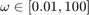
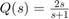
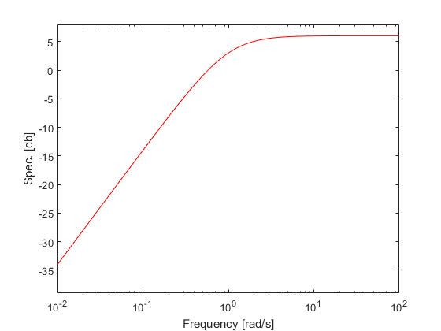

Computing Horowitz-Sidi bounds
Contents
Overview
The third stage in SISO QFT design is to compute the so called H-S bounds from templates and specifications.
The specifications are first stored in a dedicated qspc objects. If nedded, qspc also facilitates translation of the specifications from time to frequency domian, if needed.
Next the plant and specsifications are used to from a qdesign object which facilitates the design stages, including bound computations.
Creating specifications
To store a frequency resposne specification use
spc = qspc(name,w,upper,lower)
where name is the specification name, w is a vector of frequencies, and upper, lower are upper and lower magnitude response bouds, respectively.
The specification can be viewd by the qspc.show() command.
Example: 6 [db] sensitivity specifications over the range of  is stored by
sens = qspc('sens',[0.01 100],6)
sens =
qspc with properties:
name: 'sens'
frequency: [0.0100 100]
upper: [6 6]
lower: []
timespc: []
timeres: []
Example: upper bound given by the transfer function  over the range .
w = logspace(-2,2,50); % assign the frequency vector Q = qfr([2 0],[1 1],w); % compute frequenct response $Q(j\omega)$ sens = qspc('sens',w,Q.mag); % construct qspc object show(sens) % display specification
If for some reason it is preffered to use Control Systems Toolbox tf to represent the transfer function it take a little more writing:
Qtf = 2*tf([1 0],[1 1]); % assign transfer function mag = bode(Qtf,w); % compute magnitude response ubound = squeeze(mag); % squeeze dimensions sens = qspc('sens',w,20*log10(ubound)); % construct qspc object